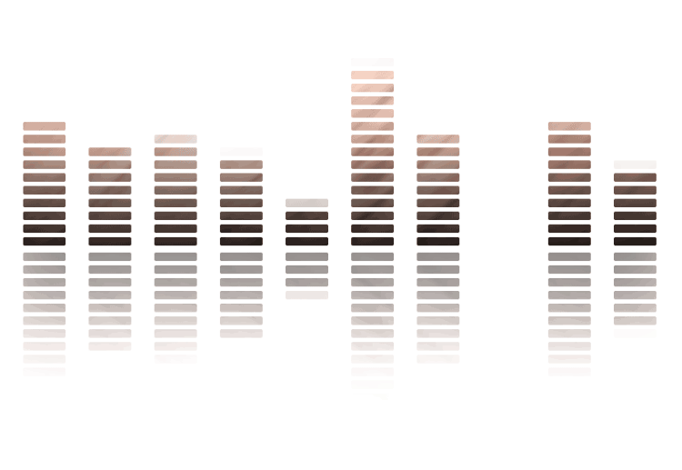

<div class="row">
    <div class="fondo-header col-12">
        <h2 class="text-center gobernacion-radio">GOBERNACIÓN RADIO</h2>
    </div>
</div>

<div class="row mt-5 mb-5 paginationes">

    <div class="col-12">
        <div class="radio-container  m-auto">
            <div class="radio-header text-center font-weight-normal">RADIO EN LÍNEA</div>
            <div class="radio-logo">
                
            </div>
            <div class="radio-btn p-3">
                <!-- Botón de reproducir -->

                <a (click)="this.toggleRadio()">

                    <ng-container *ngIf="radioService.playing; else showIcon">
                        <!-- Botón de detener -->
                        <div class="btn-radio-online border">
                            <i class="fas fa-pause"></i>
                            
                            DETENER RADIO EN LINEA
                        </div>
                    </ng-container>
                    <ng-template #showIcon>
                        <div class="btn-radio-online border">
                            <i class="fas fa-play"></i>
                            REPRODUCIR RADIO EN LÍNEA
                        </div>
                    </ng-template>
                </a>
            </div>
        </div>
    </div>
</div>

<app-footer-gadc class=""></app-footer-gadc>